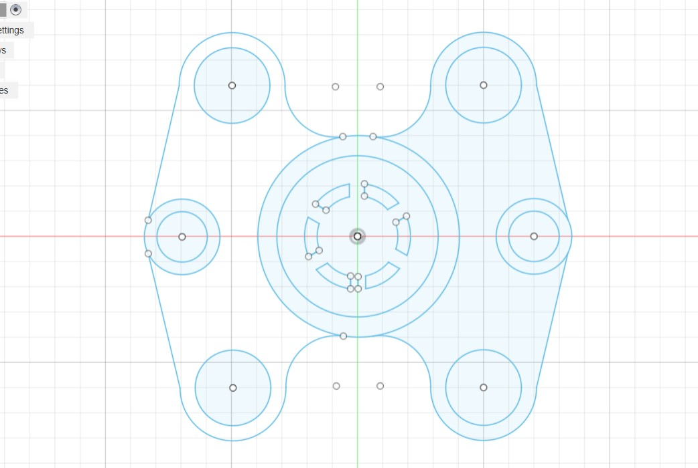

Learning Basic
Fusion 360 offers a comprehensive set of tools tailored for 3D design and engineering tasks. At its core, you'll find robust modeling tools like sketching, extruding, and filleting, which allow you to create intricate shapes and geometries with precision. The software also boasts advanced simulation capabilities, enabling engineers to test their designs under real-world conditions virtually. Additionally, Fusion 360 incorporates CAM (Computer-Aided Manufacturing) functionalities, facilitating seamless transition from design to manufacturing processes. Its cloud-based platform promotes collaboration, allowing team members to work on projects simultaneously and access files from anywhere. Overall, Fusion 360 provides an integrated solution for design, simulation, and manufacturing, making it a versatile tool for professionals across various industries.

LEARNING ABOUT 2D & 3D
2D Design
Drawing a 2D sketch in Fusion 360 is straightforward and intuitive. First, select the plane or face where you want to create your sketch. Then, use the Sketch dropdown menu to choose the type of geometry you want to draw, like lines, circles, or rectangles. Click on the sketching tools to place and define your shapes, using dimensions and constraints to ensure accuracy and control.

Fusion 360 offers smart snapping and inference tools to help align and connect your geometry seamlessly. Remember to use the sketch palette to review and edit your sketch parameters. Once you're satisfied with your 2D sketch, you can extrude it to create a 3D object or use it as a reference for further design work. Happy sketching!
3D DESIGN
To create 3D sketches in Fusion 360, start by selecting the "Sketch" tool from the toolbar and choosing the plane or surface where you want to sketch. Once you're in the sketch environment, use the drawing tools like lines, arcs, and circles to create your 2D shape. To turn this into a 3D object, you can use the "Extrude" tool to pull or push your sketch into a 3D form.
Adjust the distance and direction of the extrusion to achieve the desired shape. Remember to use constraints and dimensions to control the size and position of your sketch elements accurately. This will ensure your 3D model is precise and meets your design requirements.
For instance, if you want to design a basic geometric shape like a cube or a cylinder, you can start by sketching a square or a circle on one of the planes. Then, using the 'Extrude' tool, you can pull that shape into a 3D object with a desired height or thickness. Fusion 360 also allows you to apply fillets, chamfers, and other modifications to smooth out edges or add details to your design.
Moving on to more complex designs, Fusion 360 offers advanced modeling features like parametric modeling, which allows you to create designs that can be easily modified later. This is particularly useful for designing mechanical parts or assemblies where precise measurements and fit are crucial. With parametric modeling, you can set dimensions and constraints that define the size and position of your objects, making it easier to make adjustments as needed.
Furthermore, Fusion 360 supports assembly design, where you can create multiple components and assemble them together to form a complete product or machine. With assembly constraints and joints, you can define how different parts interact and move relative to each other, simulating real-world motion and functionality.
ASSIGNMENTS OF 3D
Another way to create 3D shapes is by using the Revolve tool. This tool allows you to revolve a 2D sketch around an axis to create a solid 3D object. Simply select the sketch and the axis of rotation, and Fusion 360 will generate the revolved shape for you.
To add smoothness and aesthetics to your designs, you can use Fillet and Chamfer tools. Fillets round off sharp edges, while chamfers create beveled edges. These tools help in enhancing the visual appeal of your 3D models and can also improve their functionality by reducing stress concentrations.
For more complex shapes and surfaces, Fusion 360 offers Loft and Sweep tools. The Loft tool allows you to create a smooth transition between two or more sketches, while the Sweep tool creates a shape by sweeping a profile along a path. These tools are useful for creating organic shapes, intricate details, and custom profiles.
Fusion 360 also supports assembly modeling, allowing you to combine multiple components into a single design. Use the Assemble tool to insert components and the Joint tool to define relationships between them, such as mates, hinges, and sliders. This enables you to simulate the movement and interaction of parts within your design.
Once your sketch is complete, you can turn it into a 3D object using the Extrude tool. Select the sketch you want to extrude and specify the distance or depth you want to extrude it. Fusion 360 also offers options like symmetric and two-sided extrusions to give your design more depth and complexity.
Before finalizing, simulate the design's performance using Fusion 360's simulation tools to test strength, motion, and thermal behavior.
COMPLEX 3D DESIGN
PROJECT 1
Creating a 4-stroke engine in Fusion 360 involves several steps. Start by sketching the engine's main components like the cylinder, piston, crankshaft, and camshaft. Use the sketching tools to define the dimensions and shapes accurately. Next, extrude these sketches to create 3D solid bodies. For the piston, apply constraints to ensure it moves within the cylinder. Then, assemble the components using the 'Assemble' tool, aligning them based on their functions. Add features like valve ports, spark plug holes, and cooling fins to enhance realism. Finally, apply materials and textures for a more realistic appearance. This process requires a good understanding of engine mechanics and Fusion 360's modeling tools.
PROJECT 2
To create a knuckle joint in Fusion 360, start by sketching the main body and the two joint arms as separate sketches. The main body typically resembles a rectangular block. Then, sketch the two arms as rectangular or L-shaped profiles that will pivot around the main body. Use the 'Revolve' or 'Extrude' commands to give them volume. Next, add cylindrical holes or pins on the joint arms and corresponding holes in the main body where the arms will pivot. Ensure these holes align perfectly for smooth movement. Finally, apply appropriate constraints and joints to allow the arms to pivot freely around the main body. This creates a functional knuckle joint that can be used in mechanical assemblies.
FINAL PROJECT
To design a Gatling gun in Fusion 360, start by sketching the main components like the barrel, housing, and rotating mechanism using the sketch tools. Use the extrude and revolve commands to give these sketches depth and shape. For the rotating barrels, create a pattern using the circular pattern tool. Incorporate features like the firing mechanism, handle, and sights by sketching and extruding additional components. Ensure proper alignment and clearance between the rotating barrels and housing to allow smooth rotation. Add details and refine the design using fillets, chamfers, and other finishing features. Finally, assemble all the components using the joint or assemble tool, ensuring they move and fit together correctly.
THINGS WE LEARNED FROM THIS MODULE
Fusion 360 is a versatile 3D modeling software that empowers users to create a wide variety of designs, from simple to complex. The key steps in designing with Fusion 360 include sketching, extruding, revolving, and utilizing advanced tools like fillets, chamfers, lofting, and sweeping. Additionally, Fusion 360 supports assembly modeling, allowing for the creation and simulation of multi-component designs.
The software's simulation and analysis tools are invaluable for testing and optimizing designs for real-world applications. Whether you're a beginner or an experienced designer, Fusion 360 offers a user-friendly interface coupled with powerful features to bring your creative ideas to life in the form of detailed and functional 3D models. By mastering its tools and workflows, you can efficiently design, simulate, and fabricate your projects with precision and confidence.